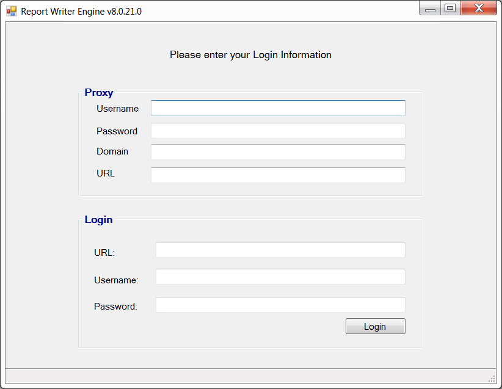
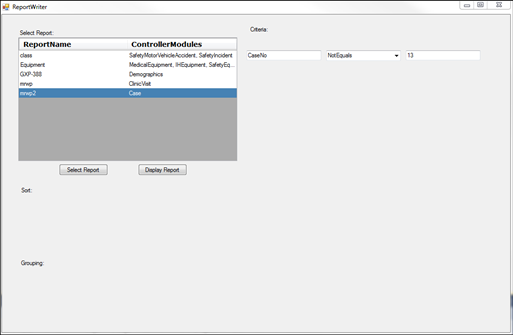
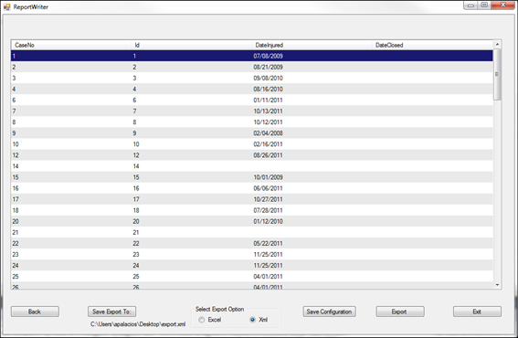

The Report Writer Utility login screen will open. Enter your proxy and login information and click Login.

If the information entered in the previous step is valid and you have permission to use the service, the ReportWriter screen will open, listing all reports you have access to. Note: Criteria and sorting information can be modified to change the output of the report.
Select the desired report and click Display Report. Note: The web service can export a maximum of 20,000 records.

The ReportWriter will display a report containing all specified fields, criteria, and sorting options selected in the previous screen.

To export the report to Excel or XML, select the desired export option and click Export. To specify where exported files are saved, click Save Export To and select a destination folder.
To save the configuration so it can be used the next time you use the Report Writer Utility, click Save Configuration. Note: You must save the configuration before attempting to run the Report Writer Utility as a scheduled task.